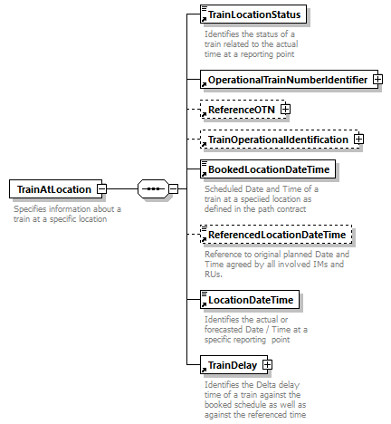

| diagram |  | |||||||||
| namespace | http://taf-jsg.info/schemes | |||||||||
| type | restriction of xs:string | |||||||||
| properties |
|
|||||||||
| used by |
|
|||||||||
| facets |
|
|||||||||
| annotation |
|
|||||||||
| source | <xs:element name="TrainActivityType"> <xs:annotation> <xs:documentation>Indicates certain treatments or operations required for a train. If national codes are used, the first 2 position will be the ISO country code, followed by 00-99. 0001 Commercial stop RU Board/disembark passenger train, load/unload freight train 0002 Operational stop IM Stops needed by the IM (e.g. overpassing by another train) 0003 Service stop RU/IM Stops which are used for non-commercial activities (e.g. boarding of staff) 0004 System stop RU/IM allowing the RU to change a system (e.g. signalling system, safety system) 0005 Reversing stop RU/IM stop to enable train unit to run in the opposite direction (without change of engine) 0006 Stops for reversing move or driver change ends RU stop to enable train unit to run in the opposite direction (with using another engine at the other end of the train and change of driver) 0007 Stops for locomotive to run round train RU stop to enable train unit to run in the opposite direction (with using the same engine at the other end of the train) 0008 Technical check/inspection coaches/wagons RU/IM e.g. at origin or intermediate station: brake test, checking load 0009 Change gauge RU/IM continuation on a network with a different gauge with change of bogies or adaptation of the axles (F->E, SVE->FI) 0010 attach engine/unit RU Unit not previously in service 0011 detach engine/unit RU Unit no longer in service 0012 change engine RU 0013 attach coach/wagon RU 0014 detach coach/wagon RU 0015 attach and detach coach/wagon RU 0016 attach train Operational Train (in service) 0017 split train Operational Train (in service) 0018 Parking of vehicle RU e.g. need to park the train/composition midway for several hours 0019 Mail/parcel services RU 0020 shunting RU actual activity of shunting 0021 shunting service RU Request for shunting service (if offered by the IM or a third party) 0022 Terminal service (terminal in the meaning of final destination) RU Request for services at the end of a train run (if offered by the IM or a third party) 0023 Loco driver change RU 0024 Loco driver break RU legal issue, e.g. to respect working law 0025 Crew change RU different to loco driver change as for the change of the crew a platform will be needed 0026 Custom and passport facilities RU 0027 Other stop reason (miscellaneous) RU/IM 0028 Boarding only RU 0029 Disembarking only RU 0030 Stop on request RU 0031 Departure equals to arrival time RU If in some stations only arrival times are published, this activity code may used to indicate that the train cannot continue before the published arrival time in case of an early arrival. 0032 Departure after disembarking RU mainly used at the end of train run, train may continue as soon as all passengers have disembarked 0033 No waiting for connection RU 0034 Watering RU Indicates the IM that a track with water access will be needed. 0035 Heating Indicates the IM that a track with heating equipment will be needed. 0036 Cleaning / disinfecting RU 0037 Treatment on plants and live animals RU Watering, Foddering, Milking, Spraying, Closing ventilation flaps, Opening ventilation flaps 0038 Treatment of perishable goods RU Checking the temperature, Re-icing, Heating, Checking the proper functioning of the mechanical refrigeration equipment, Refuelling machinery, Switching machinery on or off 0039 Administrative operations RU Weighing, Re-forwarding, Submission to phytosanitary inspections 0040 Run Through (Passing Time) IM 0041 Photo run-by / Photo-stop 0042 Train Waiting Waiting according to local rules 0043 Train running with another train RU Where trains have been attached at a previous location on the schedule 0044 Next working service RU Association where there is a need to define a relationship between a train and its next service. The same vehicle is used for the next train service. Also called "train-set turnover" 0045 Previous working service RU Association where there is a need to define a relationship between a train and its previous service. The same vehicle is reused from the previous train service. 0046 Connecting service to other train. 0047 Connecting service from other train National / company codes: Examples: Numbers 00 to 99 may be used by an IM for Network national purposes, just adding ISO country code CZ01 Stops from new stop opening day UK55 Stop shorter than 1/2 min IT72 Train report stop cancelled </xs:documentation> </xs:annotation> <xs:simpleType> <xs:restriction base="xs:string"> <xs:minLength value="4"/> <xs:maxLength value="4"/> </xs:restriction> </xs:simpleType> </xs:element> |